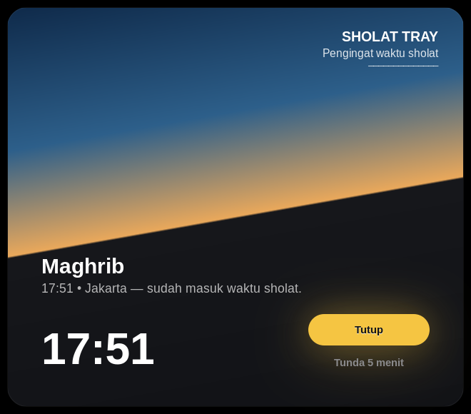
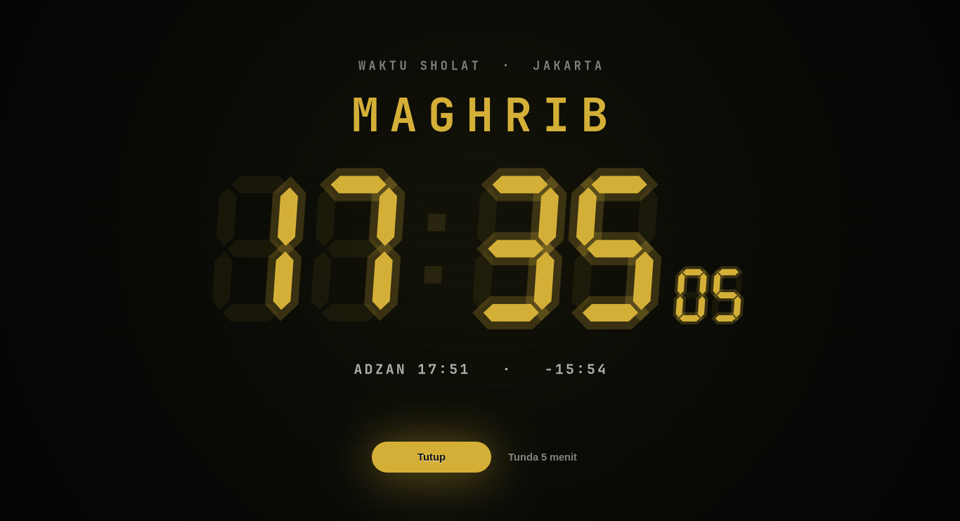

Telah masuk waktu sholat Maghrib untuk wilayah Jakarta dan sekitarnya حَيَّ عَلَى الصَّلَاةِ Mari tunaikan sholat
Pengingat sholat yang tinggal di desktop Linux‑mu.
Jadwal hari ini di bar, notifikasi 10 menit sebelum waktunya, lalu adzan dan layar pengingat begitu masuk waktu. Jalan di Omarchy, Hyprland, XFCE, dan KDE.
Empat cara mengingatkan
Pilih gaya layar pengingat dari widget bar atau menu tray. Warnanya bisa ikut tema Omarchy, atau pakai salah satu dari empat preset.


Waktu sholat
حَيَّ عَلَى الصَّلَاةِ
Maghrib
17:51 · Jakarta
Warna
- Ikut tema Omarchy
- Senja
- Subuh
- Masjid
- Malam
Cek jadwal kotamu
Sumber yang sama dengan aplikasinya: AlAdhan, metode Kemenag RI. Permintaan dikirim langsung dari browsermu ke api.aladhan.com, tanpa server kami.
Ketik nama kota, lalu tampilkan jadwal hari ini beserta hitung mundur ke sholat berikutnya.
Pasang dalam dua langkah
1. Dependensi
sudo pacman -S python-gobject gtk3 libayatana-appindicator libnotify ffmpeg grimsudo apt install python3-gi gir1.2-gtk-3.0 gir1.2-ayatanaappindicator3-0.1 libnotify-bin ffmpeg2. Ambil dan pasang
git clone https://github.com/ibeeng/sholat-tray.git
cd sholat-tray
./install.shTanpa sudo. Di Omarchy, installer ikut memasang widget bar, aturan jendela Hyprland, dan autostart. Hapus kapan saja dengan ./uninstall.sh.
File adzan tidak disertakan. Taruh rekaman milikmu di ~/.local/share/sholat-tray/adzan.mp3 dan adzan-fajr.ogg untuk Subuh.
Ke mana saja aplikasinya terhubung
Sholat Tray tidak punya server sendiri. Cache disimpan lokal di ~/.cache/sholat-tray/.
| Layanan | Untuk | Kapan |
|---|---|---|
| ip-api.com | Perkiraan kota dari IP (HTTP biasa) | Tiap 30 menit, hanya jika AUTO=1 |
| api.aladhan.com | Jadwal sholat dan tanggal Hijriah | Sekali sehari |
| api.myquran.com | Jadwal resmi kota Indonesia | Sekali sehari, hanya jika dipilih |
Tidak mau lokasi dideteksi dari IP? Set AUTO=0 dan CITY= kotamu di config.